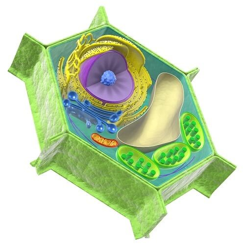

Pré-Eucariotos
Introdução
Em meio a imensidão da biodiversidade terrestre, pode-se vivenciar e evidenciar uma imensidão de variedades de organismo de complexidades e características completamente distintas nas mais diversas regiões do mundo. Com intuito de facilitar os métodos de identificação dos seres vivos foram criados alguns mecanismos de padronização destas classificações, como a categorização de taxos, criada por Karl Von Linné em 1735, ou a separação dos indivíduos por reino, por Ernst Haeckel em 1866. No entanto em meio a imensidão dos seres vivos surgem algumas perguntas, qual seria a unidade de vida primordial, e como foi dado a criação desse organismo, quais são as similares desses seres primordiais para as estruturas que conhecemos hoje, este trabalho se propõem a estigar sua curiosidade e responder essas perguntas.
IMAGEM
Seres procariontes e processo de evolução
De acordo com o cientista Robert Hooke e a teoria celular, a unidade morfofisiológica mínima de todos os seres vivos , seriam observadas através das células, que compunham suas atividade de forma isolada ou como um conjunto ,como os organismos dos reinos monera e archaea que possuem estruturas unicelulares ou do reino plantae e animália com estruturas multicelulares.
IMAGEM
Acredita-se que por conta das circunstancias do surgimento da vida as primeiras unidades criadas de células foram as procariontes oriundas do processo da evolução molecular, tal fato é dado devido a organização de um organismo procarionte se demonstrar mais simples do que uma estrutura eucarionte, na qual o material genético fica disperso no citoplasma e não apresentarem organelas membranosas
IMAGEM
. De acordo com a teoria da evolução molecular as células procariontes surgiram a 3,4 bilhões de anos enquanto as células eucariontes foram surgir em 1,7 bilhões de anos depois.
IMAGEM
A Origem
A origem dos seres eucariontes
Segundo a alguns fósseis residuais encontrados de células eucariontes primitivas , estima-se que as células eucarióticas tenham surgindo em aproximadamente 1,7 bilhões de anos . Segundo Lynn Mangulis admite que as células eucarióticas teriam surgido por intermédio de uma associação simbiótica de células procariontes, As mitocôndrias e cloroplastos são descendentes destes organismos procariontes que foram capturados por outra célula procarionte que era umas espécie de fagócito heterotrófico capaz de englobar células, após a fagocitose a celular absorvida continuou no citoplasma da hospedeira sem que houvesse uma degradação e está posteriormente ficaram incapacitadas de viver isoladamente..
IMAGEM
As principais características que apoiam esta teoria, são pautadas na semelhança do cloroplasto e mitocôndrias com bactérias com relação ao seu tamanho e forma, além de uma proximidade bioquímica, e de possuírem material genético e ribossomos próprios com capacidade de autoduplicação.
Mitocôndrias
De acordo com a teoria de Lynn as mitocôndrias teriam se originado da união de um organismo anaeróbico com um aeróbico que utilizava o oxigênio de forma bastante vantajosa para um produção maior de energia por moléculas de glicose, além de ganharem uma maior proteção do celular.
IMAGEM
Cloroplastos
Já os cloroplastos sofreram um processo semelhante porem fragmentado em varias etapas em razão da diversidade existente de plastídios. A origem foi dado da englobação de uma cianobactéria que foi englobada de forma harmoniosa a um hospedeira auxiliando na produção de alimentos do organismo.
IMAGEM
A teoria da endosinbiose e semelhanças entre procariontes e eucariontes
Pós-Eucariotos
Os Eucariontes
Divididos entre seres pluri e unicelulares, ao contrario das células procariontes as células eucariontes possui um envoltório nuclear separando assim o material genético na membrana nuclear , além disso o citoplasma das células eucariontes apresentam organelas, estruturas membranosas com diferentes papeis para o funcionamento molecular desta células além de ribossomos maiores e mais complexos do que os procariontes.
